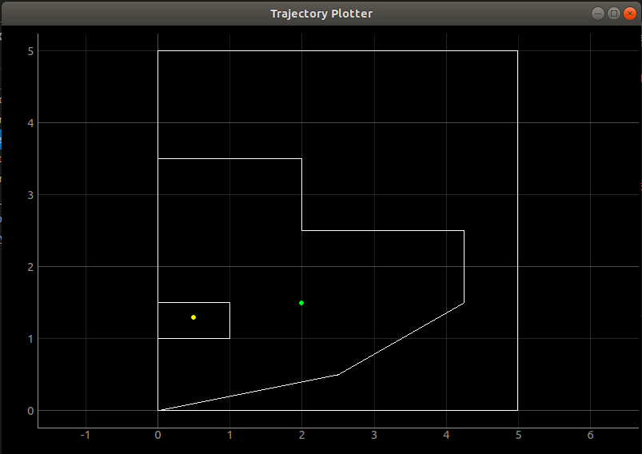

Lab 9
Localization on the real robot
After defining a map of our physical environment in lab 7, this lab is meant to localize the robot within that map. This utilizes the Bluetooth connection from lab 2, the PID loop from lab 6, and the mapping from lab 7.
During lab 6, Klaus was having a tremendous amount of difficulty performing a PID loop due to excessive friction on his wheels. The only place he was able to spin freely was on a wooden chair, which was no good for the mapping needed for lab 7. For this reason, the readings in lab 7 were acquired by manually rotating Klaus as he gathered sensor data to send over Bluetooth. Though this would’ve been a viable option for this lab, I preferred a hands-off approach and took up the suggestion to cover his wheels in Scotch tape. Surprisingly this worked, and I was able to produce a relatively smooth axis rotation.
With this loop in mind, I changed the setpoint from 50 to 30 so as to slow down the rotation and get 18 reliable readings (one for every 20 degree increment).
yaw_g = yaw_g+myICM.gyrZ()*dt;
Input = myICM.gyrZ();
Setpoint = 30;
myPID.Compute(); //compute Output for motors
if(Output>90) motorVal = 90;
//if (Output<50) motorVal = 100;
else motorVal = Output;
myMotorDriver.setDrive( 1, 1, motorVal);
myMotorDriver.setDrive( 0, 0, motorVal);
In the virtual environment, I took the start and end points of my map from lab 7 to plot the simulated environment. Additional bounding lines needed to be added or else the error “NoneType object is not iterable” would be thrown.

# Start points for each line segment describing the map start_points = np.array([[0,0], [5,0], [5,5], [0,5], [0,0], [0,1], [1,1], [1,1.5], [0,1.5], [0,3.5], [2,3.5], [2,2.5], [4.25,2.5], [4.25,1.5], [2.5,0.5]]) # End points for each line segment describing the map\n", end_points = np.array([ [5,0], [5,5], [0,5], [0,0], [0,1], [1,1], [1,1.5], [0,1.5], [0,3.5], [2,3.5], [2,2.5], [4.25,2.5], [4.25,1.5], [2.5,0.5], [0,0]])
Initializing the Mapper also required understanding the number and size of the cells used to create the map. Since the area was to be no more than a 4m by 4m space, I scaled down my coordinates by a factor of 2 so the range in x and y values was between 0 and 5, whereas before they went from 0 to 10. That meant that the min and max values for x and y had to be changed accordingly, as well as max_cells and ray_length. ray_length specifically had to be a value longer than the maximum distance between two points on the map, which in the case of my 5x5 bounding box was around 7 (the approximate hypotenuse).
# Requires a RealRobot object as input
mapper = Mapper(min_x=0, max_x=5, min_y=0, max_y=5, min_a=-180, max_a=180,
cell_size_x=0.2, cell_size_y=0.2, cell_size_a=20,
max_cells_x=25, max_cells_y=25, max_cells_a=18,
ray_length=7, lines=[start_points, end_points], obs_per_cell=18,
robot=robot)
From the 18 data points I took the readings from the time of flight sensor and divided them by 1000, since the outputs were in millimeters but the virtual environment was in meters. This was saved as a numpy array in loc.obs_range_data instead of using the function loc.get_observation_data() since that relied on a connection with the physical robot. Calling one update_step() would then plot the belief of the position of the robot within the plotter, along with the measured ground truth pose (using a ruler). Below is the code used to plot the belief and ground truth, specifically at coordinate pair (0, 3.5).
# Reset Plots robot.reset() loc.plotter.reset_plot() # Init Uniform Belief loc.init_pose() # Get Observation Data by executing a 360 degree rotation motion #loc.get_observation_data() loc.obs_range_data = np.array([0.219,0.222,0.251,0.293,0.346,0.335,0.32,0.239,0.262,0.309,0.492,0.439,0.446,0.412,0.267,0.224,0.224,0.317,0.289]) # Run Update Step loc.update_step() loc.print_update_stats(plot_data=True) # Plot Odom and GT #loc.plotter.plot_point(current_odom[0], current_odom[1], ODOM) loc.plotter.plot_point(0,3.5,GT)
I ran this procedure for multiple points, and with multiple trials for a few, and recognized that all of my sensor data pinpointed the robot to be within an obstacle. I chalk this up to unreliable sensor data, as the robot was spinning faster than in lab 7 due to the PID loop, and even then the mapping wasn’t quite accurate. I plan to recalibrate the PID loop and sensors in order to get better data.
Plots for (0,0)
Plot for (2,1.5)
Plot for (2,3.5)
Plot for (3.5,0)
Online localization means receiving real-time data from Klaus as he moves around the physical environment made for him. A critical subtask for this is establishing a Bluetooth connection from the robot to the VM, the latter of which is then able to put that data through a Bayes filter for predictions. Unfortunately, previous labs saw me run any Bluetooth connection code from my Mac host OS, so this issue needed to be debugged immediately.
An immediate red flag was the cached address within settings.py, the MAC address of the robot to be connected to using the Bluetooth USB. My original cached address, which was able to connect on my host OS, was “0EEEB402-2AC5-4904-BAFA-925974A4CBA1”, distinctly not a MAC address. This may have been okay on my Mac due to its established Bluetooth protocols, but Linux explicitly required a MAC address. lsusb and hciconfig showed that the USB was connected and running. Powering on and turning scan on within bluetoothctl displayed the various devices accessible via Bluetooth. A few weren’t named and I guess and checked by running main.py to see if I could connect to them.


Top: terminal printout when adapter was set to 'hci0'; bottom: terminal printout when adapter was set to 'hci1'
When using hci0 there was an “Operation in progress” error so I ran sudo service bluetooth restart and changed the adapter in settings.py to hci1. The following screenshot was taken after a reliable Bluetooth connection within the VM was possible, showing myRobot with the correct MAC address (66:77:88:23:BB:EF).
I wrote up the following code within main.py to establish a robot instance for the Bluetooth connection and set up the necessary functionality to send and receive messages over Bluetooth.
#!/usr/bin/env python3 import asyncio from bleak import discover, BleakClient import time from constants import Descriptors, Commands, getCommandName from ece4960robot import Robot from settings import Settings from struct import unpack, calcsize class RobotHolder: def __init__(self): client = BleakClient(theRobot_bt.address, loop=loop, device=Settings["adapter"]) # if (await client.is_connected()): # print("Robot connected!") # srv = await client.get_services() # print(srv) client.is_connected() self.theRobot = Robot(client, bleak=True) client.start_notify(Descriptors["TX_CHAR_UUID"].value, simpleHandler) def setter(self, toSet): self.instanceVariable = toSet def getter(self): return self.theRobot async def bluetooth_get_pose(): print('Robot is moving') await asyncio.sleep(3) print('Robot has stopped') return [0, 0, 30] # dummy data async def bluetooth_perform_observation_loop(): print('Executing Rotation Behavaior') await asyncio.sleep(3) print('Done with Rotation Behavior') return [0.3, 0.2, 0.5] # dummy data async def getRobot(): devices = await discover(device=Settings["adapter"], timeout=2) # for d in devices: # print(d.name) p_robot = [d for d in devices if d.name == "MyRobot"] if (len(p_robot) > 0): # print(p_robot[0].address) return p_robot[0] else: return None async def robotTest(loop): # Handle is the TX characteristic UUID; does not change in our simple case. # Robot sends "enq" every 2 seconds to keep the connection "fresh" # Otherwise, it's a struct of the form: # bytes(type + length + data) # This struct shouldn't be more than 99 bytes long. def simpleHandler(handle, value): global time # This is apparently needed. if (value == "enq".encode()): pass else: fmtstring = "BB" + str(len(value) - 2) + "s" code, length, data = unpack(fmtstring, value) ''' Python doesn't have a switch statement, nor easily compatible enum support. This might be the easiest way to handle commands. ''' if (Settings["OutputRawData"]): print( f"Code: {getCommandName(code)} Length: {length} Data: {data}" ) # Somewhat detach console output from Bluetooth handling. if (code == Commands.SER_TX.value): theRobot.pushMessage(str(data, encoding="UTF-8")) # Example of unpacking a little-endian 32-bit float. if (code == Commands.GIVE_FLOAT.value): print(unpack("<f", data)) # Example of command-response. if (code == Commands.PONG.value): print(f"Got pong: round trip {time.time() - theRobot.now}") if (Settings["pingLoop"]): loop.create_task(theRobot.ping()) # theRobot.newPing = True # Unpack from an example stream that transmits a 2-byte and a # 4-byte integer as quickly as possible, both little-endian. if (code == Commands.BYTESTREAM_TX.value): print(unpack("<LiIfff", data)) #unpacks 1 long, 2 chars and 2 floats async def checkMessages(): while True: if (theRobot.availMessage()): print(f"BTDebug: {theRobot.getMessage()}") await asyncio.sleep(0.1)
Within the Jupyter notebook environment lab9_real I first ran from main import * to bring in all
of the
variables and functions declared in main.py. In the next cell I ran:
loop = asyncio.get_event_loop()
loop.run_until_complete(robotTest(loop))
At one point this did establish a Bluetooth connection to Klaus, who then proceeded to send over sensor readings that would normally be sent over during a PID loop.
Unfortunately, after accidentally restarting the kernel I keep getting the following error, which theoretically wouldn’t be a problem if there was a connection, but there isn’t.